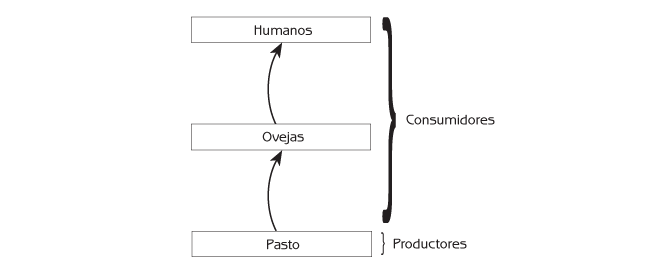
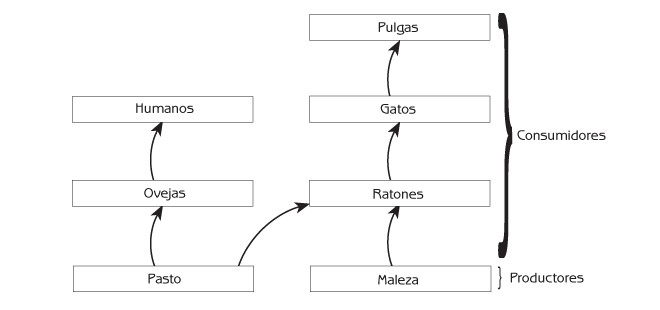
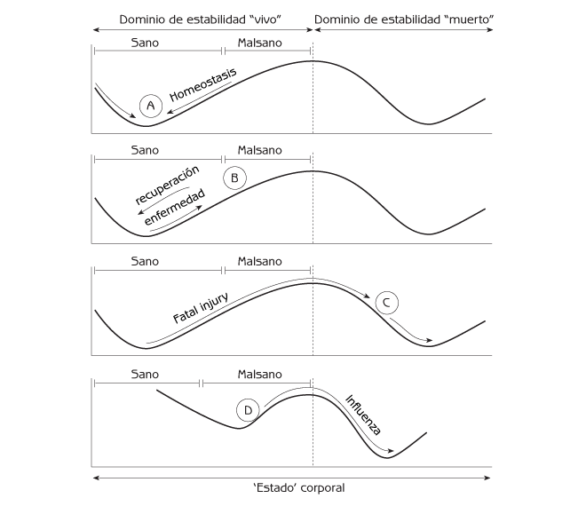
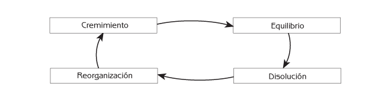
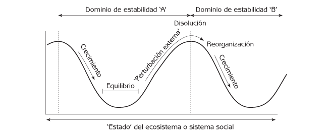

Ecología Humana: Conceptos Básicos para el Desarrollo Sustentable

Historias de éxito ambiental de todo el mundo con sus lecciones sobre cómo cambiar del deterioro a la restauración y la sustentabilidad.

Autor: Gerald G. Marten
Editorial: Earthscan Publications
Fecha de publicación: November 2001
Capitulo 4 - Los Ecosistemas y los Sistemas Sociales como Sistemas Complejos Adaptativos
- Organización Jerárquica y Propiedades Emergentes
- Auto-Organización
- Dominios de Estabilidad
- Ciclos de Sistemas Complejos
- Puntos de Reflexión
Los ecosistemas y los sistemas sociales son sistemas complejos adaptativos: complejos porque tienen muchas partes y muchas conexiones entre ellas; adaptativos porque su estructura de retroalimentación les brinda la habilidad para cambiar en formas que promueven la supervivencia en un medio ambiente fluctuante.
¿Cómo podemos entender la interacción entre el ser humano y los ecosistemas cuando la complejidad de los sistemas sociales y los ecosistemas resulta tan abrumadora? La respuesta radica en las propiedades emergentes: las características distintivas y el comportamiento que ‘emergen’ de la manera en que se organizan los sistemas complejos adaptativos. Estando consciente de las propiedades emergentes resulta más fácil ‘ver’ lo que en realidad está sucediendo. Las propiedades emergentes son la clave para comprender las interacciones entre los seres humanos y los ecosistemas, de manera que permite la ilustración del desarrollo sustentable.
Este capítulo comenzará explicando el concepto de propiedades emergentes. Después describirá con detalle tres ejemplos significativos de las propiedades emergentes:
- La auto-organización.
- Los dominios de estabilidad.
- Los ciclos de sistemas complejos.
En capítulos posteriores se describirán otras propiedades emergentes de los ecosistemas y los sistemas sociales.
Organización Jerárquica y Propiedades Emergentes
Los sistemas biológicos tienen una jerarquía de niveles de organización que se extiende desde las moléculas y las células hasta los organismos individuales, las poblaciones y los ecosistemas. Cada planta o animal individual es una colección de células; cada población es una colección de organismos individuales de la misma especie; y cada ecosistema consiste en poblaciones de diferentes especies. Los niveles de organización biológica más importantes para la ecología humana son las poblaciones y los ecosistemas.
Cada nivel de organización biológica, desde las moléculas hasta los ecosistemas, tiene comportamientos característicos que emergen para ese nivel. Estos comportamientos distintivos, llamados propiedades emergentes, funcionan en sinergia a cada nivel de organización para otorgar a ese nivel una vida propia mayor que la suma de sus partes. Esto sucede porque todas las partes encajan entre sí de manera que permite al sistema funcionar en conjunto de tal modo que promueve su propia supervivencia. En virtud de que las partes están interconectadas, el comportamiento de todas ellas está determinado por circuitos de retroalimentación que atraviesan por el resto del sistema. Una mezcla de retroalimentaciones positivas y negativas promueve el crecimiento y el cambio del sistema en conjunto.
Las propiedades emergentes son más fáciles de percibir en organismos individuales. En organismos simples, como las medusas, podemos identificar propiedades emergentes tales como el crecimiento, el desarrollo de diferentes tejidos y órganos, la homeostasis, la reproducción y la muerte. La riqueza de expresión de las propiedades emergentes aumenta con la complejidad del organismo. Por ejemplo, la ‘vista’ es una propiedad emergente, como también lo es la percepción del color. Las imágenes visuales no son una propiedad de las células que componen los organismos; la experiencia de las imágenes visuales emerge al nivel de un organismo completo. Las emociones como el miedo, la ira, la ansiedad, el odio, la alegría y el amor también son propiedades emergentes.
Las poblaciones y los ecosistemas no son organismos, pero algunas de sus propiedades emergentes son análogas a las de los organismos porque se les puede describir mediante términos como ‘crecimiento’, ‘regulación’, o ‘desarrollo’. La curva del crecimiento demográfico, la regulación de las poblaciones, la evolución genética y la organización social son ejemplos de propiedades emergentes al nivel de organización de las poblaciones. No son propiedades de los individuos de una población. Emergen como propiedades especiales de una población porque todos sus individuos se ven afectados por lo que sucede en la población en conjunto. Tomando como ejemplo la regulación de las poblaciones, las plantas y animales individuales tienen el potencial para vivir una larga vida, produciendo un gran número de descendientes. Sin embargo, la supervivencia y reproducción reales de cada individuo dependen de cuántos otros individuos hay en la población y cómo se compara este número con la capacidad de carga. Si la población total rebasa la capacidad de carga, algunos individuos de la población estarán condenados a morir por falta de alimento. El resultado es que la población se ve regulada dentro de los límites de la capacidad de carga – una propiedad emergente de las poblaciones.
¿Y qué hay de las propiedades emergentes de los ecosistemas? Todas las partes componentes de los ecosistemas están limitadas por sus conexiones con otras partes del ecosistema. Las capacidades de carga de todas las especies de la comunidad biológica de un ecosistema son una propiedad emergente del ecosistema en conjunto porque la fuente de alimento para cada especie es una consecuencia de lo que sucede en otras partes del ecosistema. La fuente de alimento de cada especie depende, en primera instancia, de la producción biológica del ecosistema y, en segunda, de la cantidad de la producción biológica del ecosistema que la red alimenticia conduce a esa especie en particular. En capítulos posteriores se describirán otras propiedades emergentes de los ecosistemas.
Los componentes de un nivel de organización interactúan principalmente con otros componentes del mismo nivel. Lo hacen respondiendo a información que surge de esos componentes. Las moléculas de proteína de la célula interactúan con otras moléculas en maneras que responden a la estructura y comportamiento de las moléculas, no a los átomos que las constituyen. Las moléculas tienen una intrincada estructura tridimensional que emerge al nivel de la molécula y le proporciona las bases para interactuar con otras moléculas. Cuando los gatos cazan ratones no procesan la información de todas las partes del ratón para detectarlo. En lugar de ello, responden a características clave que emergen al nivel del ratón integral: tamaño del cuerpo; orejas grandes; cola larga y delgada, etcétera. No procesan información acerca de la estructura celular de estas características. Los ratones responden a los gatos de una manera similar.
Una propiedad emergente de los ecosistemas y los sistemas sociales es el comportamiento contraintuitivo (es decir, contra lo que pudiera intuirse o pensarse inicialmente). A veces hacen lo contrario de lo que esperamos. Un ejemplo es la construcción de viviendas de interés social en los Estados Unidos de América durante las décadas que siguieron a la Segunda Guerra Mundial. El propósito de la vivienda de interés social era reducir la pobreza proporcionando una vivienda digna a personas de ingresos bajos, a un precio que pudieran costear. Sin embargo, la vivienda barata estimuló a las personas no calificadas a mudarse de áreas rurales hacia las ciudades, aún cuando no había trabajos disponibles. El gran número de desempleados convirtió las viviendas de interés social en guetos de pobreza. El efecto de la vivienda de interés social fue contrario a su propósito porque lo que sucedió dependía no sólo de la vivienda sino también de los circuitos de retroalimentación a través de otras partes del sistema social.
La historia de la prevención de incendios forestales constituye un ejemplo del comportamiento contraintuitivo de los ecosistemas. Los administradores de bosques trataron de reducir el daño de los incendios apagándolos. El resultado fueron daños aún mayores. Los detalles de esta historia se encuentran en el capítulo 6.
A veces, los ecosistemas y los sistemas sociales resultan contraintuitivos porque no son fácilmente comprendidos por personas cuya existencia principal se encuentra en otro nivel de organización – el nivel de un individuo dentro del ecosistema y del sistema social. Esta diferencia es una razón importante por la que a las personas se les dificulta predecir las consecuencias últimas de sus acciones sobre los ecosistemas. Las propiedades emergentes de nuestro propio nivel individual de organización – nuestros cuerpos, nuestra conciencia y nuestras interacciones directas con otras personas y otras partes del ecosistema – son obvias para nosotros, pero las propiedades emergentes de los niveles más altos de organización ya no lo son tanto. Las dificultades para percibir las propiedades emergentes de un nivel de organización más alto se pueden ilustrar imaginando un glóbulo rojo ‘pensante’ en el torrente sanguíneo de una persona. Debido a sus viajes por el cuerpo, el glóbulo rojo está bastante familiarizado con las distintas partes del cuerpo – el cerebro, el ojo, y demás – pero le resulta muy difícil comprender la vista, los pensamientos, las emociones y las actividades que provienen del cuerpo integral. Las personas, como una pequeña porción de los ecosistemas y los sistemas sociales, tienen las mismas dificultades para comprender los ecosistemas y los sistemas sociales.
Propiedades emergentes de los sistemas sociales
Las propiedades emergentes del sistema social humano son importantes para la ecología humana porque determinan de qué maneras se relacionan las personas con los ecosistemas. Una propiedad emergente es la distorsión de la información a medida que se acumulan errores a través de una red social. Esta propiedad emergente es la base del juego de ‘teléfono descompuesto’, que comienza dándole un mensaje secreto a una persona de un grupo. Esta persona susurra el mensaje a una segunda, y el mensaje se va susurrando de una persona a otra. Después de que el mensaje ha sido transmitido a todos los miembros del grupo, la primera y última persona dicen a los demás el mensaje, tal como lo entendieron. Para diversión de todos, la versión de la última persona es típicamente incorrecta de muchas maneras, aún cuando la última persona no sea un mentiroso.
Otra propiedad emergente es la negación, el rehusarse a reconocer o aceptar la verdad cuando ésta no coincide con las creencias existentes. El filtrado selectivo de la información ayuda a proteger los sistemas existentes de creencias individuales y compartidas. Por ejemplo, las naciones europeas con imperios globales se cegaron ante la opresión y explotación del colonialismo. Preferían ver al colonialismo en términos de un sistema de creencias que le atribuía motivos nobles – la diseminación de la cultura, la ciencia, y la tecnología europeas ‘superiores’, el progreso económico y la salvación religiosa de los pueblos sometidos. De manera parecida, es frecuente que los gobiernos y las personas poderosas que se benefician de la tala no sustentable de los bosques tropicales crean que los principales culpables de la deforestación son los campesinos a pequeña escala, aún cuando los campesinos locales generalmente utilizan los recursos forestales de una manera ecológicamente apropiada.
Durante los años cincuentas y sesentas del Siglo XX, algunos ecólogos trataron de advertir a la gente sobre los peligros inminentes de la explosión demográfica de la humanidad y el deterioro ambiental. La mayoría de las personas, incluso funcionarios de gobierno y líderes empresariales considerablemente poderosos, no lo creyeron, aún cuando los hechos eran bastante claros. El sistema de creencias de la sociedad de ese tiempo depositaba una gran confianza en la habilidad de la ciencia, la tecnología, y la economía de mercado libre para asegurar un progreso continuo. La mayoría de las personas consideraba que las advertencias acerca de los problemas ambientales inminentes resultaban extremistas. Costó varias décadas y muchos desastres ambientales lograr que la gente empezara a aceptar que los problemas eran reales. Esta negación tuvo un efecto muy importante sobre la interacción entre el sistema social y el ecosistema porque se perdió mucho tiempo antes de que la gente empezara a tomar en serio al medio ambiente. Esta costosa forma de negación persiste en algunas personas, incluyendo a influyentes políticos, que insisten en dudar de la realidad del calentamiento global a pesar de la evidencia abrumadora.
Las burocracias proporcionan ejemplos de las propiedades emergentes de los sistemas sociales humanos. Una propiedad emergente es que las burocracias no son muy efectivas para lidiar con situaciones inesperadas o inusuales. Esto se debe a que las burocracias utilizan procedimientos operativos uniformes para poder actuar eficientemente a gran escala. Las burocracias pueden ser efectivas para atender asuntos de rutina, pero puede no dar tan buenos resultados cuando se enfrentan a situaciones que no son usuales, debido a que sus procedimientos no están diseñados para esas situaciones. Otra propiedad emergente de las burocracias es que frecuentemente hacen cosas que resultan contrarias a su misión. La competencia entre diferentes partes de una burocracia provoca que cada parte haga lo necesario para asegurar su propia supervivencia (por ejemplo, manteniendo su porción del presupuesto) en competencia con otras partes de la burocracia, aún si sus acciones son inútiles o contraproducentes para los objetivos de la dependencia. Estas son características de una burocracia vista en su totalidad. No derivan de las características de los individuos que conforman la burocracia, que generalmente son trabajadores concienzudos. Sus trabajos pueden conducirlos a hacer cosas con las que personalmente no estén de acuerdo.
Auto-Organización
¿Por qué encajan tan bien entre sí todas las partes de un ecosistema? ¿Cómo se organizan todas las partes, sus conexiones funcionales y los circuitos de retroalimentación resultantes, de tal manera que todo funcione simultáneamente? La asombrosa respuesta a estas preguntas es que los ecosistemas se organizan a sí mismos, y lo mismo es cierto para los sistemas sociales. Se organizan a sí mismos mediante un proceso de ensamble que se parece al bien conocido proceso de selección natural de la evolución biológica.
Auto-organización de las comunidades biológicas
El corazón de la organización de un ecosistema radica en su comunidad biológica – todas las plantas, animales y microorganismos que viven en el ecosistema. Las especies que forman la comunidad biológica de un lugar específico provienen de un conjunto mayor de especies que habitan el área circundante. La selección de esas especies, y su organización en una red alimenticia, sucede mediante un proceso denominado ensamble comunitario. En este contexto, ensamble significa ‘conjuntar o encajar unas partes con otras’. El proceso de ensamble comunitario es una propiedad emergente de los ecosistemas.
La comunidad biológica de un lugar particular es consecuencia de la llegada, en el pasado, de varias especies de plantas, animales y microorganismos. Siempre que llega a un sitio una nueva especie, sobrevivirá y establecerá una población solamente si al inicio los nacimientos son más numerosos que las muertes. Su población no sobrevivirá si las muertes son más numerosas que los nacimientos. Si la especie recién llegada sobrevive, su población crecerá exponencialmente hasta que alcance su capacidad de carga, como se muestra en la Figura 2.9. Así, la nueva especie se incorpora a la comunidad biológica del sitio.
Hay tres reglas del ensamble comunitario que determinan si la población de una especie recién llegada puede sobrevivir en un sitio. Para sobrevivir y formar parte de un ecosistema, una especie recién llegada debe satisfacer las siguientes condiciones:
- Está adaptada a las condiciones físicas del sitio y puede sobrevivir en ellas todo el año.
- El sitio cuenta con el tipo adecuado de alimento, y hay suficiente alimento y agua para que la especie recién llegada de planta o animal pueda crecer y reproducirse. (El número de nacimientos debe exceder al de muertes cuando la población es pequeña.) Para las plantas, el alimento consiste en agua y nutrientes minerales del suelo, más luz solar. Para los animales, el alimento consiste en las especies particulares de plantas o animales comestibles. Una especie recién llegada no sobrevivirá si sus fuentes de alimentación se ven demasiado reducidas por la competencia de plantas o animales preexistentes en el sitio que utilizan las mismas fuentes de alimentación.
- Si en el sitio ya hay animales que pueden comerse a la especie recién llegada, esta debe tener la habilidad para evitar que se coman a demasiados de sus individuos. El número de muertes no debe exceder al de nacimientos.
La siguiente historia muestra cómo funciona el ensamble comunitario. Imagine una isla cercana a la costa, de un kilómetro de diámetro, donde mueren todas las plantas y animales durante un incendio. Solamente sobrevive el pasto. Muy pronto, este ha crecido por toda la isla. El granjero dueño de la isla decide que quiere criar ovejas en ella. La capacidad de carga para las ovejas en la isla es de 50 individuos, de modo que el granjero pone 50 ovejas en la isla.
La Figura 4.1 ilustra la sencilla cadena alimenticia en la isla una vez que el granjero la puebla de ovejas.

Figura 4.1 Cadena alimenticia inicial en el cuento de la isla.
La isla se encuentra a un kilómetro de la costa, donde hay cientos de especies de plantas y animales que ocasionalmente pueden flotar hasta la isla, por ejemplo en un tronco. Distintas especies de plantas y animales son transportadas a la isla en varios momentos durante los primeros años posteriores al incendio. Cada especie se incorpora a la red alimenticia si cumple con las tres reglas para la supervivencia de las poblaciones que se enumeraron anteriormente. Es mejor continuar esta historia esquematizando la nueva trama alimentaria cada vez que se añade una especie.
- Llegan semillas de árboles a la isla. A las ovejas les encanta comer las plántulas recién emergidas del suelo y los arbolitos jóvenes. ¿Sobrevivirán los árboles?
- Llegan semillas de hierbas a la isla. Las hierbas no son apetecibles para las ovejas. ¿Sobrevivirán las hierbas? ¿Qué pasa con la cantidad de pasto en la isla? ¿Qué pasa con la capacidad de carga para las ovejas?
- Llegan ratones a la isla. Los ratones comen pasto y hierbas. ¿Sobrevivirán en la isla? ¿Qué sucede con la cantidad de pasto y la capacidad de carga para las ovejas?
- Llegan conejos a la isla. Los conejos comen pasto. ¿Sobrevivirán? ¿Qué pasará con la capacidad de carga para las ovejas?
- Llegan zorras a la isla. Comen ratones. No pueden comerse a todos los ratones porque estos son lo suficientemente pequeños para esconderse. A las zorras les encanta comer conejos. Matan rápidamente a todos los conejos porque son demasiado grandes como para esconderse. ¿Sobrevivirán las zorras? ¿Qué pasa con el número de ratones? ¿Qué pasa con los conejos? ¿Qué pasa con el pasto y la capacidad de carga para las ovejas?
- Llega a la isla un insecto que come hojas de árboles. ¿Sobrevivirá?
- Llegan gatos a la isla. Los gatos, que son mejores para cazar ratones que las zorras, reducen el número de ratones a tal grado que las zorras ya no tienen alimento suficiente. Sin embargo, basta un pequeño número de ratones para que los gatos sobrevivan. ¿Qué pasa con las zorras? ¿Qué pasa con la capacidad de carga para las ovejas?
- Llegan pulgas de gato a la isla. ¿Sobrevivirán?
La Figura 4.2 muestra la comunidad biológica después de la llegada de todas estas plantas y animales a la isla. La comunidad biológica está organizada como una red alimenticia. Las redes alimenticias son otra propiedad emergente de los ecosistemas. Cada especie de planta, animal o microorganismo juega un papel particular en la red alimenticia – su nicho ecológico – principalmente definido por su posición en la red (es decir, por las demás especies de la comunidad biológica que utiliza como alimento, y que la utilizan como alimento). Los nichos ecológicos también se definen por las condiciones físicas, como el ciclo anual de temperatura y humedad en el micro-hábitat donde vive una especie.

Figura 4.2 Cadena alimenticia final en el cuento de la isla.
Es posible ver que algunas de las plantas y animales que llegaron a la isla no están en el diagrama porque no sobrevivieron. No encajaron en la comunidad biológica que existía cuando llegaron. Esta es la razón por la que las comunidades biológicas siempre tienen plantas y animales que encajan unos con otros con cada cambio de la red alimenticia. Las reglas que determinan si una especie nueva sobrevive también se aplican a las especies que ya se encuentran en la comunidad biológica. Los conejos desaparecieron de la isla cuando los depredadores (zorras) que llegaron mataron a demasiados conejos como para que su población sobreviviera. Las zorras desaparecieron con la llegada de los gatos, que resultaron mejores competidores en la red alimenticia que existía en ese momento. Finalmente, la proporción de la producción biológica de la isla que le tocaba al granjero (esto es, el pasto para sus ovejas) cambió a medida que avanzaba la historia. Esta historia continuará por muchos años a medida que lleguen nuevas plantas y animales a la isla y crezca gradualmente el número de especies en la red alimenticia.
Este sencillo ejemplo trató únicamente con plantas y animales, pero los microorganismos, tales como las bacterias y los hongos, aunque sean menos conspicuos, son igualmente significativos en los ecosistemas reales. Cada planta y animal proporciona hábitat y sustento a millones de bacterias. Algunas de las bacterias son dañinas, pero la mayoría es inocua o incluso esencial para la supervivencia de la planta o animal. Los microorganismos también son actores protagónicos en las redes alimenticias del suelo. Un litro de tierra típicamente contiene miles de millones de bacterias cuyo papel central en los ciclos ecológicos las hace esenciales para la supervivencia del ecosistema en conjunto.
La comunidad biológica creada por el proceso de ensamble se debe en parte a la casualidad. Depende, en parte, de qué especies llegan a la isla, y cuándo llegan. Si nos imaginamos diez islas con la misma fuente de plantas y animales en la costa continental, la progresión de las comunidades biológicas de cada una de ellas puede ser muy diferente de las demás. Algunas de las comunidades serán similares a otras, aunque no exactamente iguales. Otras pueden ser completamente distintas. Sin embargo, el elemento del azar en el ensamble comunitario no significa que cualquier combinación de plantas y animales es posible. De hecho, todas las comunidades biológicas que se pueden crear son un subconjunto minúsculo de todas las combinaciones posibles, ya que el ensamble comunitario solamente admitirá aquellas plantas y animales que encajen entre sí en una red alimenticia funcional.
El proceso de ensamble comunitario no está limitado a las islas. Sucede en todas partes todo el tiempo. Cada lugar del mundo es una ‘isla’ donde continuamente llegan plantas y animales de áreas cercanas. Las comunidades biológicas de la mayoría de las regiones del mundo contienen cientos de especies de plantas y animales, y todas las plantas y animales de cada región encajan entre sí.
Auto-organización de los sistemas sociales
Todos los sistemas complejos adaptativos se auto-organizan. El proceso de ensamble que se ilustró en la historia de la isla es una de las formas principales en que los sistemas complejos, incluso los sistemas sociales, se organizan a sí mismos.
La manera en que funciona el proceso de ensamble en los sistemas sociales se puede ilustrar analizando las actividades comerciales. Cuando alguien inicia un nuevo negocio, la supervivencia del negocio puede depender de reglas como las siguientes:
- El negocio se adapta a la comunidad.
- Hay demanda para los productos o servicios del negocio.
- El negocio puede generar suficientes clientes para producir ganancias. No hay negocios competidores que proporcionen el mismo producto o servicio al grado de que no existan clientes suficientes o que el precio del producto o servicio resulte demasiado bajo como para generar ganancias.
- El negocio cuenta con una buena fuente de suministro de lo que necesita para elaborar sus productos o proporcionar sus servicios. El costo de estos insumos no es mayor que los ingresos del negocio.
Si se comparan estas reglas con las reglas de ensamble que imperan para las comunidades biológicas analizadas al principio de este capítulo, es posible ver la semejanza entre los dos conjuntos de reglas, y ver cómo los mismos procesos que organizan los ecosistemas también se aplican a los sistemas sociales.
El proceso de ensamble en los ecosistemas y los sistemas sociales es semejante a la evolución biológica. La evolución biológica se basa en las mutaciones genéticas, que pueden sobrevivir o no al proceso de selección natural. (Cada mutación genética es una ‘recién llegada’). La evolución biológica es lenta porque las mutaciones genéticas son cambios azarosos que generalmente resultan lesivos. Sólo de manera ocasional surgen mutaciones lo suficientemente benéficas como para sobrevivir a la selección natural.
También las culturas humanas evolucionan. Para las culturas, las mutaciones son las nuevas ideas. Las nuevas ideas sobreviven si encajan con el resto de la cultura y prueban su utilidad. Si una idea sobrevive o no puede depender de la situación. Una idea nueva puede sobrevivir exitosamente en una cultura particular, y en un momento y lugar determinado, pero esa misma idea puede fracasar en una cultura diferente o en un tiempo o lugar distintos, porque no encaja. La evolución cultural humana puede resultar mucho más veloz que la biológica porque las mutaciones culturales no son eventos azarosos como las mutaciones biológicas. Las mutaciones culturales son ideas que las personas formulan para resolver problemas, de modo que las mutaciones culturales frecuentemente encajan en la cultura lo suficientemente bien como para sobrevivir e incorporarse a la cultura.
Dominios de Estabilidad
Los ecosistemas y los sistemas sociales presentan una tensión entre fuerzas que se resisten al cambio (retroalimentación negativa) y fuerzas que promueven el cambio (retroalimentación positiva). La retroalimentación negativa mantiene a las partes esenciales del sistema dentro de los límites requeridos para que funcionen conjuntamente, mientras que la retroalimentación positiva les proporciona la capacidad para efectuar grandes cambios cuando resultan necesarios. La retroalimentación negativa puede dominar en algunos momentos, y en otros la positiva puede resultar la dominante, dependiendo de la situación. Como resultado, los ecosistemas y los sistemas sociales pueden permanecer más o menos en el mismo estado durante largos períodos, pero también pueden cambiar muy súbitamente. Los cambios pueden ser como un ‘conmutador’. La ‘conmutación’ es una propiedad emergente de todos los sistemas complejos adaptativos, incluyendo a los ecosistemas y los sistemas sociales.
La Figura 4.3 muestra el interruptor de un cuerpo humano que pasa de la vida a la muerte. La homeostasis, en forma de cientos de circuitos de retroalimentación negativa, normalmente mantiene todas las partes de un cuerpo saludable más o menos como deben estar, pero el estado de un cuerpo cambia cuando la persona se encuentra enferma o herida. El estado involucra todas las condiciones del cuerpo en un momento determinado – la temperatura, la presión sanguínea, la concentración de azúcar en la sangre, las concentraciones de hormonas, la tasa respiratoria, y cientos de otras cosas. El eje horizontal del diagrama representa el estado del cuerpo. Cada punto en el eje horizontal representa la condición de una persona (esto es, todo acerca de su cuerpo) en un momento determinado. Los puntos que se encuentran muy cerca unos de otros representan estados similares, y los puntos que se encuentran más alejados representan estados que son más distintos unos de otros.

Figura 4.3 Los estados corporales “vivo” y “muerto” ilustran el concepto de dominios de estabilidad.
La colocación de la bola representa el estado del cuerpo en un momento determinado, y el movimiento de la bola representa un cambio en el estado del cuerpo de un momento a otro. Una distancia corta en el movimiento representa un cambio pequeño, y una distancia más larga representa un cambio mayor. En esta metáfora, la fuerza gravitacional sobre la bola representa las fuerzas de cambio naturales en el sistema complejo. El movimiento ‘cuesta abajo’ de la bola representa el cambio debido a los mecanismos homeostáticos que mantienen al cuerpo en un estado saludable. La bola se mueve de un lado a otro a medida que los eventos azarosos cambian la condición del cuerpo, pero generalmente se mantiene cerca del fondo del ‘valle’ (A). Si una persona saludable experimenta una perturbación externa, como una enfermedad o una herida, la perturbación fuerza a la bola a moverse pendiente arriba hacia un estado no saludable (B). Generalmente, el cuerpo elimina la infección o repara la herida y todo vuelve a la normalidad. La bola rueda hacia el fondo del valle, y el cuerpo se encuentra de nuevo tan saludable como en A. Y sea que esté enfermo o saludable, el cuerpo se mantiene en la parte ‘viva’ del diagrama (el dominio de estabilidad ‘vivo’) porque la homeostasis lo mantiene así.
El diagrama tiene otro dominio de estabilidad: ‘muerto’. Una enfermedad o una herida graves pueden cambiar al cuerpo tanto que la bola es empujada por encima de la cresta de la pendiente, del dominio de estabilidad ‘vivo’ al dominio ‘muerto’ (C). El cuerpo ya no funciona como antes; nuevos circuitos de retroalimentación lo cambian hacia un estado muy diferente. La temperatura corporal desciende hasta alcanzar la del medio ambiente circulante, los músculos se vuelven rígidos, y cientos de procesos internos se detienen. A medida que el cuerpo cambia debido a los procesos naturales que siguen a la muerte, la bola rueda hasta el fondo del valle del dominio de estabilidad ‘muerto’. No hay fuerzas naturales que empujen la bola de regreso al dominio ‘vivo’. El cuerpo no vuelve a la vida, aún cuando ha terminado la perturbación externa.
Los eventos traumáticos como las enfermedades o las heridas no son las únicas formas en que un cuerpo puede cambiar. Un cuerpo puede cambiar gradualmente debido a procesos internos, como el envejecimiento. A medida que la salud de una persona se deteriora con la edad, la forma de la colina cambia de manera que el fondo del valle se acerca al límite entre ‘vivo’ y ‘muerto’ (D). Cuando los mecanismos homeostáticos se debilitan, la pendiente de la colina se hace menos pronunciada, de manera que resulta más fácil que una perturbación empuje la bola la corta distancia que la separa de la cima de la colina y hacia el dominio ‘muerto’. Las fracturas de cadera y enfermedades como la influenza o la neumonía, que rara vez son mortales en los jóvenes, pueden ser fatales para los ancianos.
Un sencillo rompecabezas ilustra cómo los dominios de estabilidad son consecuencia del diseño de un sistema, esto es, de la organización de sus partes componentes. El reto consiste en balancear seis clavos sobre la cabeza de un clavo vertical. La solución se encuentra en un arreglo simple y estable de los clavos que está lejos de resultar evidente (ver Figura 4.4A). Esto representa un dominio de estabilidad. Si se mueve cualquiera de los seis clavos, modificando su relación con los demás, toda la configuración se colapsa y se desplaza hacia un nuevo dominio de estabilidad, como el de la Figura 4.4B. Lo mismo que el arreglo de la Figura 4.4ª puede ser la única solución viable al rompecabezas, las formas en que las partes componentes potenciales de una comunidad biológica pueden encajar entre sí para conformar un ecosistema funcional y viable también son relativamente pocas en comparación con la enorme cantidad de posibilidades.

Figura 4.4 Dominios de estabilidad alternos para clavos. ¡Inténtelo!
¿Qué es el estado de un sistema social? ¿Cuáles son sus dominios de estabilidad? El estado de un sistema social es todo lo que atañe a una sociedad en un momento y un lugar determinados – la cultura, el conocimiento, la tecnología, las percepciones, los valores, y la organización social. Fluctúa constantemente en algunos de sus aspectos, mientras que permanece más o menos fijo en otros. Hay circuitos de retroalimentación negativa que mantienen a los sistemas sociales dentro de dominios de estabilidad impuestos por sistemas culturales, políticos y económicos particulares, mientras que procesos tales como la evolución cultural cambian gradualmente la forma de los dominios. A veces, los sistemas sociales experimentan cambios bruscos de un dominio de estabilidad a otro. La ruptura de lo que fuera la Unión de Repúblicas Socialistas Soviéticas es un ejemplo notable. La Glasnost y la Perestroika fueron ‘perturbaciones’ que desencadenaron una multitud de circuitos de retroalimentación que impulsaron a la Unión Soviética de un dominio de estabilidad de ‘una sola nación’ a otro de ‘naciones separadas’. En el mundo en vías de desarrollo se están llevando a cabo varios cambios bruscos de sistema social a medida que la difusión de la economía global estimula cambios sociales y culturales severos.
¿Qué es el estado del ecosistema? El estado de un ecosistema es la suma total de las partes del ecosistema: el tamaño de las poblaciones de todas las especies de plantas, animales y microorganismos; la cantidad o concentración de todas las sustancias del aire, el suelo y el agua; y todas las estructuras construidas por la gente. El estado del ecosistema cambia en la medida en que cualquiera de estas partes se altera con el paso del tiempo. Las ‘pendientes’ en un diagrama de estabilidad del ecosistema representan los procesos ecológicos naturales que mantienen la integridad de un ecosistema manteniéndolo en el mismo dominio de estabilidad. Las ‘pendientes’ también representan procesos tales como el ensamble comunitario, que sistemáticamente modifican los ecosistemas (ver el tema de sucesión ecológica en el Capítulo 6).
Para los ecosistemas, las perturbaciones externas, como los huracanes, los incendios, y la introducción de plantas y animales exóticos (como el caso del lirio acuático introducido el Lago Victoria descrito en el Capítulo 1), son eventos traumáticos que los cambian completamente, moviéndolos de un dominio de estabilidad a otro. Los impactos de las actividades humanas también pueden ser una perturbación externa para los ecosistemas. Los dominios de estabilidad de los ecosistemas jugarán un papel importante en el próximo capítulo y aparecerán a lo largo del resto del libro. Son importantes para el desarrollo sustentable porque las actividades humanas pueden desencadenar cambios que modifican de manera irreversible un ecosistema de un dominio de estabilidad deseable a uno indeseable.
Ciclos de Sistemas Complejos
Los ecosistemas y los sistemas sociales cambian de dos maneras:
- Cambios progresivos debidos a procesos internos de ensamble para la auto-organización (ensamble de comunidades biológicas y evolución cultural).
- Cambios súbitos de un dominio de estabilidad a otro debidos a perturbaciones externas (esto es, a ‘conmutadores’).
Los cambios progresivos y los súbitos se combinan para formar un ciclo de sistemas complejos (ver Figura 4.5). El ‘crecimiento’ es un período dominado por la retroalimentación positiva y los procesos de ensamble para la auto-organización. Es un tiempo de expansión y creciente complejidad. El ‘equilibrio’ es un período de estabilidad. El sistema ha alcanzado un alto nivel de complejidad y conexión entre sus partes. Predomina la retroalimentación negativa. El sistema puede hacerse rígido y dar la impresión de resultar indestructible, pero el estancamiento y la carencia de flexibilidad pueden hacerlo eventualmente vulnerable a la destrucción por una perturbación externa. La ‘disolución’ sucede cuando el sistema es destruido por una perturbación externa. La retroalimentación positiva genera cambios dramáticos, y el sistema se desbarata. Es empujado fuera de su dominio de estabilidad. La ‘reorganización’ es un período en el que el sistema empieza a recuperarse de la destrucción. Es un tiempo de creación en el que los cambios pueden seguir una gran variedad de direcciones posibles; esto es, el sistema tiene la posibilidad de moverse hacia varios dominios de estabilidad diferentes. El ‘azar’ puede ser un factor importante para la forma en que un sistema se reorganiza, determinando hacia qué dominio de estabilidad se dirige. La etapa de crecimiento que sigue a la reorganización depende del curso iniciado durante esta última.

Figura 4.5 El ciclo de sistemas complejos.
La Figura 4.6 muestra cómo un ecosistema o un sistema social cambian de un dominio de estabilidad a otro en el transcurso de un ciclo de sistemas complejos.

Figura 4.6 Ciclos de sistemas complejos desde la perspectiva de dominios de estabilidad.
Las poblaciones presentan ciclos de sistemas complejos. La etapa de crecimiento de una población es un período de aumento exponencial. Una población es regulada en o por debajo de su capacidad de carga durante la etapa de equilibrio. Las poblaciones de muchas especies de plantas y animales pueden permanecer durante mucho tiempo en la etapa de equilibrio, pero las poblaciones de otras especies experimentan ‘colapsos’ frecuentes porque rebasan su capacidad de carga. Los colapsos demográficos son la etapa de disolución. Por ejemplo, una población de insectos que se alimenta de una planta se puede multiplicar rápidamente (crecimiento), extendiéndose sobre la planta y eventualmente matándola. Los insectos se van volando cuando la planta muere (disolución). La mayoría de ellos muere de hambre porque fracasa en la búsqueda de otro hospedero adecuado, pero unos pocos encuentran una planta sobre la que pueden fundar una nueva población (reorganización). En el caso de los seres humanos, las personas se reorganizan típicamente cambiándose a un lugar diferente si su población rebasa la capacidad de carga local.
Los ecosistemas también tienen ciclos de sistemas complejos porque el ensamble comunitario sigue un ciclo complejo. La historia de la isla comenzó con una disolución cuando el fuego destruyó la comunidad biológica original, que era un bosque. La supervivencia del pasto y del rebaño fue una ‘reorganización’ que estableció el rumbo para el crecimiento subsiguiente de la comunidad biológica, a medida que varias plantas y animales llegaban a la isla. El crecimiento continuará en tanto sigan llegando plantas y animales, y algunos se incorporarán a la comunidad biológica. Eventualmente, cuando prácticamente todos los nichos posibles de la red alimenticia hayan sido ocupados, se irá haciendo más difícil que sobrevivan nuevas especies; la comunidad biológica se mantendrá igual (equilibrio) hasta que una nueva perturbación, como un incendio o la excavadora de un constructor, ocasione un cambio dramático (disolución). Los ciclos de sistemas complejos de los ecosistemas se describirán en mayor detalle como sucesión ecológica en el Capítulo 6.
Los sistemas sociales tienen ciclos de sistemas complejos que abarcan desde una pequeña porción de la sociedad (por ejemplo, un club) a naciones enteras. Así como varía la escala, los períodos de tiempo pueden variar de unos cuantos meses a años o siglos. Los períodos históricos de las naciones son ejemplos de ciclos de largo plazo. La Restauración Meiji en el Japón del Siglo XIX fue el tiempo de disolución del shogunato de Tokugawa y reorganización para restaurar el poder del emperador. Después hubo un período de crecimiento (con la formación de nuevas instituciones políticas y la industrialización) seguido por uno de equilibrio (el gobierno militar del Japón Imperial). La derrota de Japón al final de la Segunda Guerra Mundial condujo a la disolución del gobierno militar, lo que fue rápidamente seguido por una reorganización cuando Japón adoptó nuevas instituciones sociales tales como los procesos democráticos occidentales. Japón empezó a reconstruir su economía y se convirtió en una potencia económica mundial (crecimiento). La ‘economía de burbuja’ que Japón experimentó con el crecimiento económico fue desapareciendo en la medida en que la economía Japonesa se acercaba al equilibrio. Algunas de las instituciones económicas y políticas de Japón fueron descartadas (disolución) a medida que Japón reorganizaba su estrategia económica internacional en respuesta a la industrialización e ingreso al mercado global de otras naciones asiáticas.
Las políticas pueden cambiar dramáticamente durante los ciclos de los sistemas sociales. Las políticas se encuentran bien desarrolladas y son frecuentemente rígidas durante el período de equilibrio. Durante la disolución, la gente cuestiona las políticas existentes y las rechaza porque las considera inadecuadas. Durante la reorganización se formulan nuevas políticas, e incluso marcos de referencia radicalmente nuevos. Durante el crecimiento se afinan los detalles y se robustecen las nuevas políticas.
Las personas y los gobiernos suelen cometer el error de suponer que la situación existente continuará sin cambios durante mucho tiempo. Si se encuentran en una etapa de crecimiento, piensan que podrán continuar creciendo por siempre, y se sorprenden y desilusionan cuando el crecimiento ya no es posible. Si se encuentran en una etapa de equilibrio, suponen que la estabilidad y el control de esa etapa durarán para siempre, y se sorprenden cuando un desastre inesperado hace que las cosas se desmoronen. Cuando las cosas se desmoronan (disolución), pueden pensar que es ‘el fin del mundo’, pero la reorganización los volverá a colocar en la senda hacia la normalidad.
Una sociedad efectiva tiene la habilidad para funcionar durante las cuatro etapas del ciclo de sistemas complejos. Una sociedad efectiva no es solamente capaz de funcionar bien en el estado presente, sino que también está preparada para lidiar con las condiciones muy diferentes que se presentarán en la siguiente etapa. Las sociedades efectivas tienen la capacidad para crecer cuando les surge la oportunidad para hacerlo, y tienen la capacidad para funcionar de manera sustentable cuando el crecimiento ya no es posible. Cuando las cosas se desmoronan, como siempre sucede tarde o temprano, las sociedades efectivas tienen la habilidad para moverse rápidamente hacia la reorganización y un nuevo crecimiento.
Puntos de Reflexión
- Con los conmutadores, algo permanece igual debido a la retroalimentación negativa, y después cambia rápidamente a otra cosa debido a la retroalimentación positiva. Piense en ejemplos de conmutadores a varios niveles de su sistema social (familia, vecindad, nacional, internacional).
- Piense en ejemplos de ciclos de sistemas complejos en su familia, su barrio, la historia de su país, y la historia del mundo. Sea explícito acerca de cada etapa del ciclo (crecimiento, equilibrio, disolución, y reorganización).
- Considere la historia de la isla. Empezando con la Figura 4.1, esquematice una serie de diagramas de redes alimenticias que muestren la nueva cadena alimenticia cada vez que una nueva especie se añada a la comunidad biológica de la isla. Deberá terminar con un diagrama como el de la red alimenticia de la Figura 4.2.
- ¿Cuáles son algunas de las propiedades emergentes de su:
- sistema social familiar;
- sistema social de la vecindad;
- sistema social escolar o laboral;
- y sistema social nacional?
Tenga en mente que las propiedades emergentes surgen del sistema integral. No provienen simplemente de las partes; derivan de la forma en que las partes se encuentran organizadas entre sí.
- Piense en ejemplos de negación en su vida personal. ¿Cuáles son algunos ejemplos de negación en la sociedad donde vive?